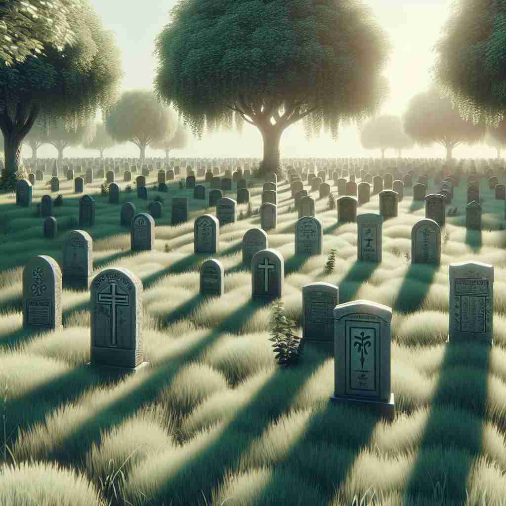

💬 People often visit a grave to remember their loved ones. 人们常常去墓地缅怀他们的亲人。

💬 People often visit a grave to remember their loved ones. 人们常常去墓地缅怀他们的亲人。
💬 People often visit a grave to remember their loved ones. 人们常常去墓地缅怀他们的亲人。
💬 People often visit a grave to remember their loved ones. 人们常常去墓地缅怀他们的亲人。
🧠 想象一座'墓穴'（grave），它是严肃、庄重的地方，人们在此刻字纪念，周围氛围沉静低沉。这个核心意象贯穿了'grave'的各种含义，从字面的'坟墓'延伸到抽象的'严肃'、'庄重'，以及相关的'刻划'动作和'低沉'音调。通过这个中心意象，你可以更容易理解和记忆'grave'的多重含义。
🔈 [greɪv]
🗝️ n. a place where a dead person is buried 埋葬死者的地方
🎭 在一个宁静的墓园里，绿树成荫，鸟儿在枝头轻声啼唱。阳光透过树叶洒在一块墓碑上，上面写着一位逝者的名字。这安静的地方，是他们长眠的墓穴所在地，象征着最终的安息。
💬 They visited their grandfather's grave on Memorial Day. 他们在阵亡将士纪念日拜访了祖父的墓。
🌳 词根 'grav-' 表示重或严重，与法语和拉丁语的 'gravis' 有关，意指重量或重要性。形容词 'grave' 表示严重的、庄重的，引申为需要重视的。
💡 记住 'grave' 可以联想到一个重的石碑（墓碑），因为它标记了一个重要而庄重的地方，这样可以帮助记忆其形容词意义中的庄重和严重的含义。
🗝️ adj. serious and important 严肃而重要
🎭 在一个会议室里，公司的高管们正聚精会神地倾听首席执行官的发言。他的语气沉稳且庄重，脸上流露出'grave'的神情，因为正在讨论的是一项至关重要的企业决策。
💬 The situation is very grave; we need to act immediately. 情况非常严重；我们需要立即采取行动。
🤔 与死亡相关的事物通常被视为严肃且重要的
🗝️ v. to engrave or carve 雕刻或刻画
🎭 在一个传统手工艺作坊里，一位工匠正在专心地在金属板上雕刻图案。精美的线条在手下逐渐成形，这正是'grave'这个动词的体现—小心翼翼地刻下深沉的印记。
💬 The artist graved the winner's name on the trophy. 艺术家在奖杯上刻上了获胜者的名字。
🤔 源于在墓碑上刻字的行为
🗝️ adj. deep in tone or pitch 音调或音高较低
🎭 在一场音乐会上，大提琴手低下头，缓缓演奏出低沉而丰满的旋律。那深沉的音调在大厅回荡，令听众感受到音乐的'grave'之美。
💬 The cello produces a rich, grave tone. 大提琴发出圆润而深沉的音色。
🤔 联想到低沉的声音如同来自墓穴深处
🗝️ adj. dignified and solemn 庄严肃穆
🎭 在一个庄严的仪式上，长辈们身着正装，面带肃穆，缓步走向讲台。他们的每一个动作都充满了'grave'的威严，纪念某个重要的时刻。
💬 The judge maintained a grave expression throughout the trial. 法官在整个审判过程中始终保持严肃的表情。
🤔 与墓地氛围相关的庄重感